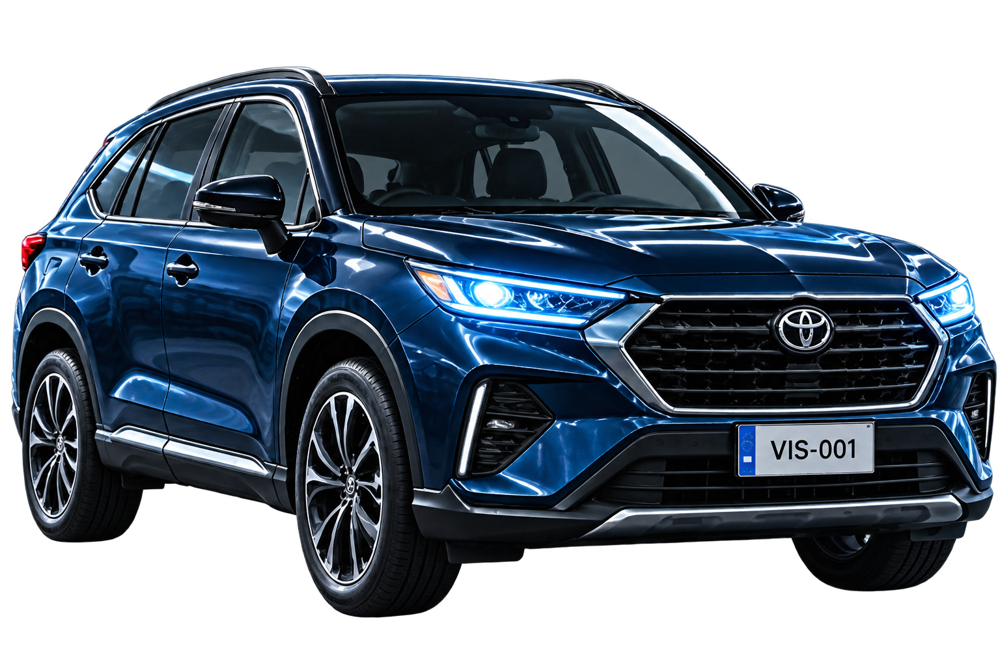
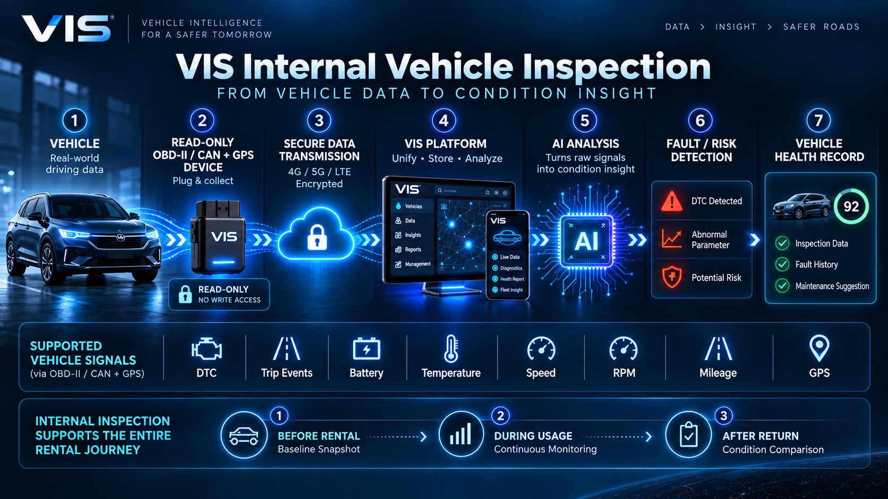

VISUAL AI
OBD / CAN
GPS
AI INSIGHT
CONNECTED VEHICLE CONDITION INTELLIGENCE
نموذج عامل للفحص الخارجي + رؤية منصة متصلة قيد التطوير
VIS · VEHICLE INTELLIGENCE SYSTEM
استكشف ذكاء المركبة عبر رحلتها كاملة.
VIS تربط الفحص الخارجي، البيانات الداخلية المدعومة، والمراقبة أثناء الاستخدام في سجل حالة واحد يوضح ما كان موجودًا قبل التأجير، وما ظهر أثناءه، وما تغيّر بعد الإرجاع.
رحلة حالة واحدة
من التسليم إلى الإرجاع، كل مرحلة تضيف طبقة جديدة من الأدلة.
01
قبل التأجيرBaseline Inspection
02
أثناء الاستخدامMonitoring Context
03
بعد الإرجاعCompare & Record
لماذا VIS؟
المشكلة ليست اكتشاف الضرر فقط، بل فهم حالة المركبة عبر الزمن.
في عمليات التأجير التقليدية تبقى الصور، الأعطال، أحداث الرحلة والمعلومات التشغيلية منفصلة. VIS تربط هذه الأدلة في سياق واحد أوضح وأقرب لاتخاذ القرار.
ضرر سابق غير موثق
الخدوش أو الانبعاجات الصغيرة قد تمر من دون خط أساس بصري واضح قبل التسليم.
نزاع بعد الإرجاع
من دون مقارنة منظمة يصعب معرفة إن كان الضرر جديدًا أم موجودًا مسبقًا.
فترة استخدام غير مرئية
الصورة وحدها لا تشرح الأحداث التشغيلية أو التشخيصية التي ظهرت أثناء فترة الاستخدام.
BEFORE · DURING · AFTER
فكرة VIS في ثلاث مراحل واضحة.
نسجل الحالة الأساسية، نربط ما يحدث أثناء الاستخدام، ثم نعيد الفحص ونقارن عند الإرجاع.
01 · BEFORE
قبل التأجير
تصوير السيارة من ثماني زوايا، تحليل المركبة واللوحة والأجزاء والأضرار القائمة، وتكوين خط أساس للحالة.
8 ViewsAI InspectionBaseline
02 · DURING
أثناء الاستخدام
ربط الموقع وأحداث الرحلة ومؤشرات القيادة والبيانات التشخيصية المدعومة بزمن الرحلة.
GPSTrip EventsDiagnostics
03 · AFTER
بعد الإرجاع
إعادة الفحص والمقارنة مع الحالة المرجعية لتحديد التغيّرات الجديدة وربطها بالفترة التي ظهرت خلالها.
ComparisonChange DetectionCondition Record
نموذج عامل حاليًا · الفحص الخارجي
ما الذي تغيّر في جسم المركبة؟ هنا يبدأ الدليل البصري.
النموذج الحالي يحلل صور المركبة، يكتشف الأضرار الخارجية، يربطها بالأجزاء المتأثرة، ثم يقارن قبل/بعد لإبراز الضرر الجديد.
WORKING PROTOTYPE
تغطية منظمة للحالة الخارجية بدل صور عشوائية.
اكتشاف الأضرار الخارجية المدعومة بصريًا.
تحويل الكشف إلى معلومة مرتبطة بجزء محدد من المركبة.
إبراز دليل الضرر الجديد بدل إعادة عرض الضرر القديم فقط.
رؤية المنصة · الذكاء الداخلي للمركبة
ما لا تراه الكاميرا، يمكن أن توضحه بيانات المركبة المدعومة.
تجمع VIS البيانات التي تتيحها المركبة عبر OBD-II / CAN وGPS، تنقلها بأمان، ثم تنظّمها زمنيًا لبناء فهم أعمق للحالة الداخلية والأعطال والأنماط التشغيلية.

اضغط لتكبير المخطط
OBD-II / CAN + GPS
قراءة البيانات التشخيصية والتشغيلية المتاحة بحسب المركبة والبروتوكول المدعوم.
من الإشارة الخام إلى سياق الحالة
ربط DTC والقراءات والاتجاهات الزمنية وأحداث الرحلة بفترة الاستخدام نفسها.
DTC / MILBattery / Temp.Speed / RPMGPS / Mileage
Read-Only أولًا
الجهاز المقترح يجمع البيانات المدعومة ولا يرسل أوامر تحكم إلى الأنظمة الحرجة في المركبة.
أثناء الاستخدام · السياق الزمني
تحويل فترة التأجير من فجوة مجهولة إلى سلسلة أحداث قابلة للفهم.
عند توفر البيانات المدعومة، يمكن لـ VIS ربط موقع المركبة، أحداث الرحلة، بعض مؤشرات القيادة، والأحداث التشخيصية بزمن الاستخدام، ثم إدراجها في سجل الحالة.
LIVE DATA CONCEPT
72km/h
2450RPM
13.9Vالبطارية
91°Cحرارة التبريد
حدث قيادة
مثال: تسجيل كبح قوي مع وقت وموقع الرحلة.
حدث تشخيصي
مثال: ظهور نمط غير طبيعي وإضافته للمراجعة.
VEHICLE CONDITION TIMELINE
تسجيل الحالة المرجعية
الفحص الخارجي + اللقطة التشخيصية المدعومة.
بدء التأجير
الحالة المرجعية تصبح نقطة المقارنة لهذه الرحلة.
أحداث مرتبطة بالوقت
GPS وأحداث قيادة وبيانات تشخيصية مدعومة.
إعادة الفحص والمقارنة
تحديد ما تغيّر وربطه بالفترة التي ظهر خلالها.
المنصة الكاملة
نواة ذكاء واحدة تخدم رحلة التأجير وحالة المركبة.
تتكامل VIS مع عمليات التأجير وتخدم أربع جهات رئيسية، مع بقاء كل جهة ضمن واجهات وصلاحيات تناسب دورها.
شركات التأجير
إدارة المركبات والحجوزات والفحوصات والعقود والمطالبات، مع إمكانية التكامل عبر API.
أصحاب السيارات
عرض المركبات للتأجير بعد التحقق واستيفاء المتطلبات القانونية والتأمينية والفنية.
المستأجرون
تجربة حجز وتسليم أوضح مع حالة مرجعية للمركبة قبل الاستخدام.
شركات التأمين
الاستفادة من نتائج الفحص وسجل الاستخدام والأدلة المساندة لمراجعة المطالبات.
ABOUT VIS · عن VIS
نبني طبقة ذكاء توثّق حالة المركبة عبر رحلة الاستخدام كاملة.
VIS مشروع تقني يهدف إلى دمج الرؤية الحاسوبية، البيانات التشخيصية المدعومة، والمراقبة الزمنية ضمن منصة واحدة تساعد على فهم حالة المركبة بصورة أوضح، وتدعم عمليات التأجير والنزاعات والمطالبات المستقبلية بأدلة أفضل.
Computer Vision
Vehicle Diagnostics
Connected Monitoring
Condition Intelligence